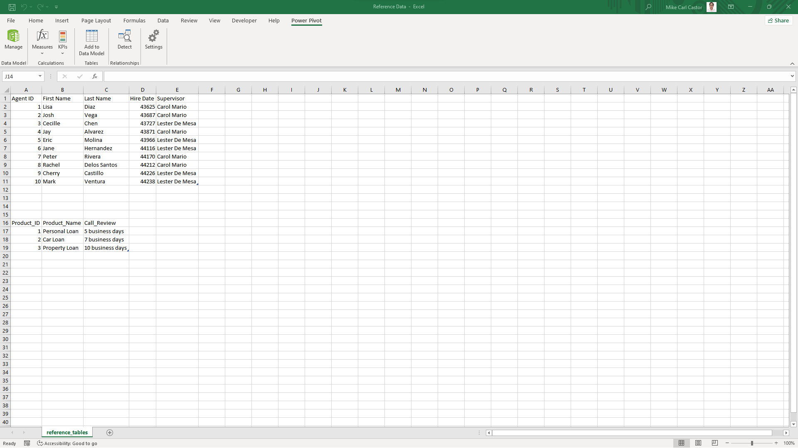

Project Contents
Project Plan
Project client:
- Call Center Management Team
- Human Resources Department
- Quality Assurance Team
- Operations and Workforce Management Team
*Note: As this is a personal project, there is no actual external client involved. The project client described below is a fictional representation created for the purpose of this project. It serves to illustrate the perspective and requirements that would typically be considered in a call center project.
Team:
- Project Manager
- Data Analyst
- Data Engineer
- Domain Expert/Call Center Specialist
- IT/Systems Support
- Stakeholders/Subject Matter Experts
*Note: The team described above is conceptual and represents a hypothetical setup for this personal project. While the team members are not real individuals, they are included to illustrate the roles and responsibilities typically associated with a call center project.
Business Objectives:
- Who are the top performers?
- Which product has the longest call duration?
- How to optimize staffing levels?
- How to reduce customer waiting time?
- How to increase customer satisfaction ratings?
Data Analysis Goals:
- Identify agents with the highest customer satisfaction ratings and call volumes.
- Calculate the average call duration for each product.
- Analyze historical call volume patterns to identify peak periods.
- Identify factors contributing to longer customer waiting times.
- Analyze customer satisfaction ratings by agent, product, or other relevant factors.
Project Scope:
- The project aims to analyze the provided call center dataset to achieve the defined business objectives and make data-driven recommendations for improving call center performance and customer satisfaction.
- The analysis will focus on the following key areas: top performers, call duration by product, staffing optimization, customer waiting time reduction, and customer satisfaction ratings improvement.
Expected Output:
- Data analysis reports presenting insights, findings, and recommendations related to the defined business objectives.
- Identification of top-performing agents based on customer satisfaction ratings and call volumes.
- Identification of products with the longest call durations.
- Identification of peak periods based on historical call volume patterns.
- Analysis of factors contributing to longer customer waiting times.
- Analysis of
Project Overview
For this project, I analyzed a call center dataset recorded from June 1, 2021, to July 1, 2021. The dataset, available in CSV format, includes columns such as:
- agent_id
- date
- product_id
- calls_handled
- avg_aht (average handling time)
- avg_queue_time (average queue time)
- Customer_satisfaction
There is also another dataset containing two reference tables. The first table has five columns namely:
- Agent_ID
- First_Name
- Last_Name
- Hire_Date
- Supervisor
While the second table has:
- Product_ID
- Product_Name
- Call_Review
These tables will be useful in adding additional columns to the call center dataset for more in-depth analysis.
The primary objective of this project is to investigate the factors contributing to low customer satisfaction rates within the call center. By leveraging data analysis techniques, I aimed to uncover insights and provide actionable recommendations to improve the customer rating.
Using Excel as my primary tool, I performed data cleaning and preprocessing to ensure data accuracy and consistency. This involved addressing missing values, handling inconsistencies, and preparing the dataset for further analysis.
I then proceeded to conduct a comprehensive analysis of the call center data. Through statistical analysis, data visualization, and exploratory techniques, I examined the relationships between customer satisfaction and various factors such as agent performance, call handling metrics, and queue times.
By identifying potential correlations, trends, and patterns in the data, I sought to pinpoint the root causes behind the low customer satisfaction rate. With these insights, I will be able to provide actionable recommendations to boost the customer rating and enhance the overall call center experience.
The outcome of this project will be a set of insights and recommendations based on the analysis, empowering the call center management with data-driven strategies to address the underlying issues affecting customer satisfaction.
Data Cleaning and Preparation
STEP 1. DATA TRANSFORMATION
Since the file is in CSV format. I have to transform the data first before cleaning it. The image below shows what the raw file looks like if loaded on excel.

In order to transform the raw file into a more comprehensible table, I have to import it to Power Query. After importing, the data will automatically turn it into a table, removing the unnecessary characters such as colons, semi-colons, commas, etc. The video clip below shows how I imported the file and transformed it in Power Query.
STEP 2. DATA CLEANING
Now that I finished transforming the data, the next step is cleaning. Firstly, I have to remove any duplicates in the data. Then, I have to remove or replace any missing values. Missing values are usually defined as “nulls”. Lastly, I have to change the date data type into dates since they are in numerical values. The clip below shows the entire cleaning process.
STEP 3. LOADING THE DATA
After cleaning the data, I loaded it on Excel and changed the sheet name as “call_center_cleaned”. The picture shows what the data looks like after loaded on Excel.

Although the data is already transformed and cleaned, there are still a few columns that I need to add. If you can remember, I have a dataset with two reference tables. This is where it will come in handy. The picture below shows what the reference table looks like.
STEP 4. DATA INTEGRATION
After copying the reference tables into my call_center_cleaned workbook, I began adding columns to the dataset. The first column I added was the agents’ full name. The video clip below shows the process.
I also wanted to extract the data in Hire Date column from the reference sheet. To do this, I used XLOOKUP function just like what I did in Full Name column. Please play the video clip below to see the process.
Next, let’s integrate some data from the product table. I wanted to extract the product_name based on the product_id. For this, I used the same lookup function. See the video clip below.
Finally, I extracted the supervisor column. This column contains the names of the supervisors under whom the agents are working. Please see the process below.
STEP 2. COLUMN AUGMENTATION
After incorporating columns using lookup functions, I improved the dataset by adding calculated columns. One of the new columns I created is called tenure, which shows how long each agent has been working for the company. To calculate this, I subtracted the hire date of each agent from the cutoff date. The cutoff date marks the point in time that separates when additional business transactions should be recorded in the next reporting period. If you'd like to see a step-by-step demonstration, please watch the accompanying video clip.
Next, I proceeded to add a weekday column, which indicates the specific day of the week when each transaction occurred. To generate this column, I utilized the date column and extracted the corresponding weekday information. This additional column will prove useful for my time series analysis in the future. For a more detailed demonstration of the process, please refer to the provided video clip.
Lastly, I added the avg_aht_in_minutes column, which represents the average call duration in minutes. To achieve this, I utilized the data from the avg_aht column, which was initially measured in seconds. Since each day contains 24 hours (86,400 seconds), I divided the values in the avg_aht column by 86,400 to convert them into minutes. This conversion allowed me to express the average call duration in a more understandable unit. For a detailed demonstration of the process, please refer to the accompanying video clip.
Methodology
Findings
The average processing time for Yellevate to settle invoices is 26 days. Russia has the longest processing time to settle invoices with 29 days. It is followed by the US and France with 28 days, while Spain and China takes 25 and 23 days respectively.
The average days for Yellevate to settle disputes is 36 days. France and China had the shortest processing with only 34 days. This is 12% faster than Spain, Russia, and the US that took 37, 38, and 41 days respectively.
The disputes lost and the processing time to settle disputes do not follow the same trend. Therefore, the processing time for disputes does not affect the number of disputes lost.

France has lost 34.23% of its total disputes which is the highest percentage of lost among other countries (Spain, Russia, US, and China) making up 75% of Yellevate's total disputes lost.

France has lost 13.35% of its total revenue which is the highest percentage of lost among other countries (Spain, Russia, US, and China) making up 76% of Yellevate's total lost revenue.
Disputes lost and lost revenue follow the same trend. As the percentage of disputes lost goes up, the percentage of lost revenue also makes an uptrend particularly those accounts in France. Therefore, to lessen the revenue lost and disputes lost, the company must make sure that clients in France make payments for their invoices.
Recommendations
According to the data that was gathered and analysis that was done, it is apparent that clients from France critically affected Yellevate's cashflow due to disputes. To lessen the frequency of disputes and improve the company's annual revenue, here's what I recommend to do:
- The company should review their contract technicalities and make sure that terms written are understandable and unambiguous for every client. (esp. in France)
- Make a stricter payment shorter payment term - like 15 days to guarantee that money will keep coming into your business.
- Sending payment reminders regularly may also help clients get updated with their invoices and keep them reminded that the deadline is coming up. This way, clients can be persuaded to pay up on time.
- Having a discussion with the client about what payment method they are used to would also make getting paid even easier.
- The company can offer incentives such as discounts or rewards to those who pay before the invoice due date and give late fees to those who don't pay on time.
FAQs
If you have any questions about my data analysis for the Yellevate project, feel free to send me a message through the website and I'll get back to you as soon as possible.
Phone
+639451557209Address
PoblacionTboli, South Cotabato 9513
Philippines